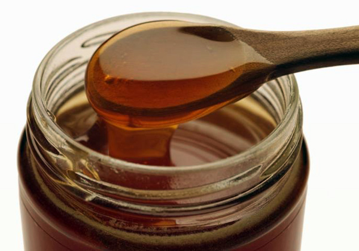
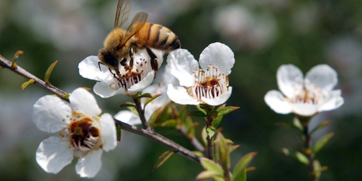

По данным исследования, опубликованного в Journal of Clinical Pathology, даже низкие разведения новозеландского мёда Манука (или мёда чайного дерева) могут подавлять активность и рост патогенов на любых поверхностях, включая пластик.
По данным исследования, опубликованного в Journal of Clinical Pathology, даже низкие разведения новозеландского мёда Манука (или мёда чайного дерева) могут подавлять активность и рост патогенов на любых поверхностях, включая пластик.
Благоприятные условия для инфекций
Было показано, что биоплёнки, возникающие на поверхностях медицинских устройств, могут быть источником инфекции и являться своеобразным резервуаром патогенов. Особый риск такого рода устройства представляют для пациентов с установленными мочевыми катетерами, поскольку катетеры нередко устанавливаются на продолжительные периоды времени. Как результат, их применение, а применяются они у одного из четырёх госпитализированных пациентов, связано с частыми осложнениями, такими как воспаление и инфекция.

Антибактериальные свойства мёда
Применение мёда в качестве лечебного средства берет свое начало из глубины веков. Последние исследования свидетельствует, что у мёда имеются антибактериальные и противовоспалительные свойства.
Мёд Манука производится в Австралии и Новой Зеландии. Мёд собирают пчелы с древовидного кустарника Манука, более известного как чайное дерево. Этот мёд очень вязкий и липкий, и есть доказательства, что он использовался ранее для лечения раневых инфекций. Также показано, что мёд Манука эффективен для борьбы с инфекциями и ускоряет заживление ран.
Исследователи из Университетов Саутгемптон и Портсмут (граф. Гэмпшир, Англия, Великобритания) изучили, может ли мёд Манука препятствовать образованию и росту биоплёнок.
E. coli и Proteus
Для реализации поставленной задачи исследователи культивировали E. coli штамм ATC 25922 и Proteus mirabilis штамм 7002 на пластиковых 96-луночных планшетах (чашках) в лаборатории. Кишечная палочка и протей были выбраны, поскольку именно эти два патогена вызывают большинство инфекций мочевыводящих путей, которые возникают при длительном применении катетера. При использовании данной модели в лаборатории биоплёнки возникают через 3 суток.
Мёд разводился дистиллированной водой и добавлялся на пластиковые чашки в 5 различных разведениях (концентрациях мёда) — от 16,7% до 3,3%.
Как оказалось, мёд Манука значимо снижает прилипание бактерий к чашке и, как результат, подавляет образование биоплёнок. Следует отметить, что даже в наименьшей концентрации мёда (3,3%) отмечалось сдерживание прилипания на 35% после 48 ч по сравнению с применением только растворителя, не содержавшего мёда.
Наибольший эффект от применения раствора с мёдом Манука отмечался через 3 суток и при использовании наибольшей концентрации (16,7%) — адгезия бактерий снижалась на 77%.

Дальнейшее лечение
Исследователи отмечают, что в данной работе продемонстрировано, что раствор мёда Манука является потенциально эффективным средством для снижения образования биоплёнок на установленных в организм пластиковых устройствах, таких как мочевые катетеры.
Кроме этого, пациентам могут быть также полезны противовоспалительные свойства мёда, которые, как правило, сильнее в более тёмном меде, таком как Манука. Ещё одним плюсом от применения мёда, по мнению исследователей, является тот факт, что развитие антибиотикорезистентности не будет являться проблемой при использовании мёда.
Тем не менее, ограничениями данного исследования является выполнение его в лабораторных условиях, а для доказательства клинической пользы меда Манука необходимо, чтобы такое же исследование было проведено в клинической практике.
Emineke S., Cooper A.J., Fouch S., Birch B.R., Lwaleed B.A.
Diluted honey inhibits biofilm formation: potential application in urinary catheter management?
J Clin Pathol. 2016 Sep 26. pii: jclinpath-2015-203546.